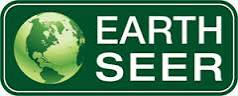
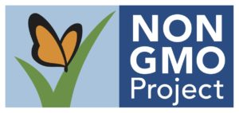

We are passionate about raising the standards within the organic industry. Currently, we are amongst the few herbal companies in India to receive HACCP, GMP, ISO 9001-2015 and Kosher Certifications. We have Organic Certifications from Control Union and SGS as per USDA, EU and NPOP Organic Standards. From preservation of seed to sowing, from cultivation to harvesting, from processing to production through sales and marketing, each step of the way is a testimony of our commitment to integrity, accountability and responsibility for Holistic Quality Assurance.
This new standard reflects a sustainable business commitment which inspires, promotes and supports well-being and respect for all beings and for Mother Nature. Earth Seer stands for:
SGS GMP certification verifies that all required practices necessary for an effective food safety program are being followed. It addresses hygiene in all aspects of the SGS manufacturing process, including premises and equipment, primary production, packaging, warehousing, distribution, pest control and waste management, as well as routine personal hygiene of personnel.
ORGANIC INDIA Pvt. Ltd. meets the requirements of Codex Allmentarius Commission Guidelines, Recommended International Code of Practices, General Principles of Food Hygiene, CAC/RCP 1-1969 Rev. 3 (1997).
The majority of ORGANIC INDIA's Tulsi teas and herbal supplements have been verified as Non-GMO. This verification authenticates the integrity of ORGANIC INDIA seeds, herbs and products as natural heritage strains. A Non-GMO Project is a non-profit organization raising awareness about the dangers and unknown aspects of genetically modified foods. Here is the current list of our products carrying this logo, Click Here. Additional products are in the process of becoming Non-GMO Project Verified.
Established in 1973, the Soil Association certifies over 4,500 farms and businesses all over the world and is the most recognized organic mark in the UK today. The Soil Association standards of ORGANIC INDIA exceed the UK government's minimum requirements - especially in areas concerning the environment and animal welfare.